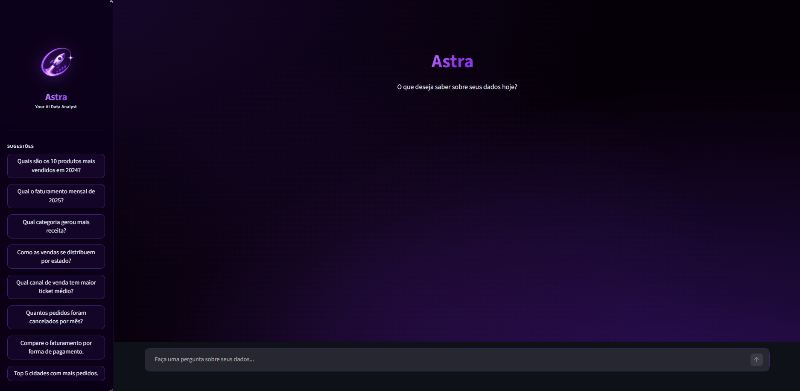

An AI-powered data analyst that lets you query a Brazilian e-commerce database using plain Portuguese. Ask any business question and get back a natural-language insight, an auto-generated chart, the SQL that ran, and the raw data — all powered by Claude Haiku and DuckDB. Built as my MBA thesis at FIAP.

Every question goes through a 4-step pipeline:
Natural language analysis of the results — trends, peaks, and anomalies highlighted.
Auto-selected chart type (bar, line, pie, horizontal bar) based on the data shape.
The full query that ran, formatted and readable — full transparency on the data source.
The underlying dataframe, explorable and filterable in the UI.